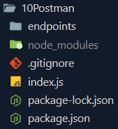
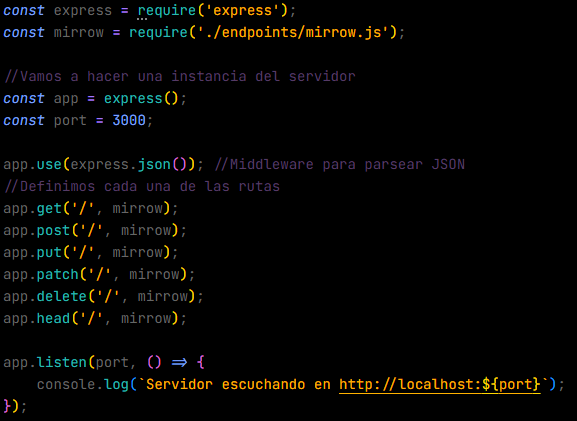
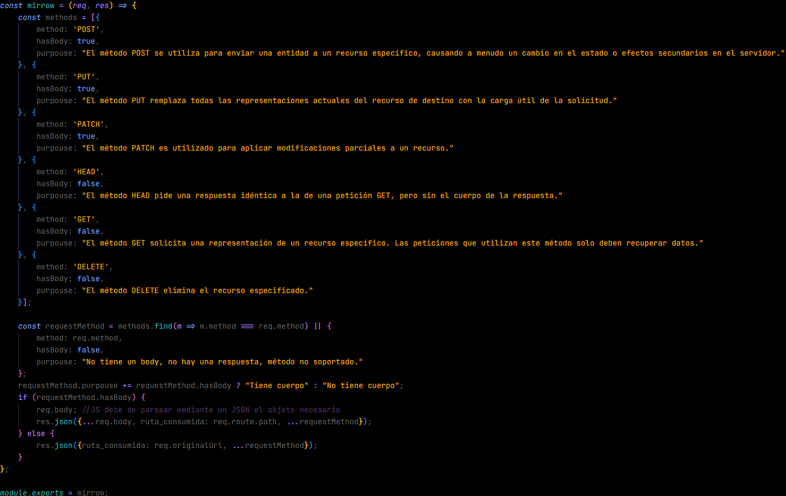
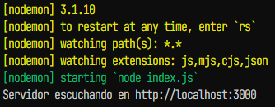
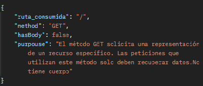

Práctica con Postman: Evidencias
Carpeta

Estructura interna de la carpeta "10Postman"
Código de index.js

Código donde definimos las rutas y el puerto del servidor
Código de mirrow.js

Código donde se definen los métodos y se exporta
Ejecución del index.js

Ejecución del código del server con nodemon
Resultado en Postman

Resultado de las pruebas realizadas en Postman al solicitar el GET